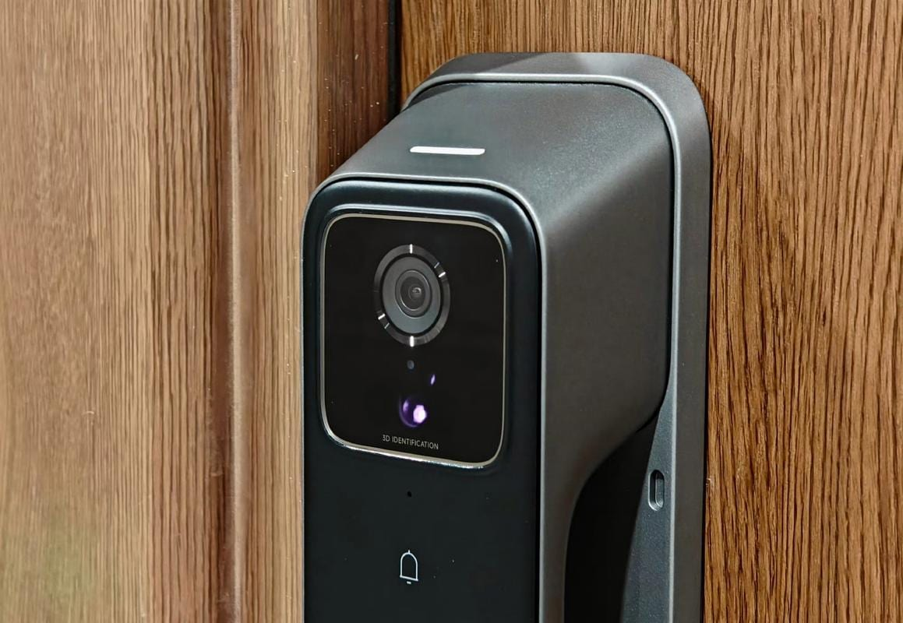

小米全自动智能门锁 Pro

小米中高端全自动智能门锁，指纹、密码、NFC 等多种开锁方式齐全，关门自动上锁省去反锁步骤。可联动米家设备实现回家自动开灯等场景，适合追求性价比与米家生态联动的家庭用户。
客观评测
小米全自动智能门锁 Pro 采用全自动锁体，关门自动上锁并支持门虚掩提醒，日常无需手动反锁。开锁方式覆盖指纹、密码、NFC、蓝牙、临时密码与应急钥匙，半导体指纹湿手表现尚可，识别速度约半秒。C 级直插式锁芯提供物理安全性，门内一键反锁与防猫眼开启是实用细节。续航靠 8 节 5 号电池约一年，Type-C 可应急供电。远程功能需搭配蓝牙网关。
主观点评
换了这把锁之后最大的变化是「不用想锁门了」，关门自动上锁，出远门也不惦记。指纹识别基本秒开，孩子的小手指纹一次录入后也没再失败过。朋友临时来家，发个临时密码过去就行，比在门口等着方便太多。接上蓝牙网关后，人没到家就能看门锁状态、联动开灯，米家全家桶的快乐就在这里。要说不足，就是进出门还得按指纹，做不到人脸那种无感。
优点与不足
- 全自动锁体关门即锁，老人小孩不易忘反锁
- 开锁方式齐全，NFC 与临时密码对访客友好
- 米家联动场景丰富，回家自动化体验完整
- 无 3D 人脸识别，无法做到完全无感开锁
- 依赖蓝牙网关实现远程功能，需额外添置
参数规格
| 开锁方式 | 指纹、密码、NFC、蓝牙、临时密码、应急钥匙 |
|---|---|
| 指纹识别 | 半导体指纹识别，识别率约 99.2%（约） |
| 识别速度 | 约 0.5 秒（约） |
| 密码 | 支持 6-10 位密码与虚位密码防窥 |
| 电池 | 8 节 5 号电池，续航约 12 个月（约） |
| 锁芯 | C 级锁芯（直插式） |
| 联网 | 蓝牙 + 蓝牙 Mesh 网关（联动米家） |
| 锁体 | 全自动锁体，关门自动上锁 |
| 安全 | 门内一键反锁、防猫眼开启、防撬报警 |
| 门铃 | 内置门铃与远程提醒 |
| 应急供电 | Type-C 应急供电口 |
| 门内逃生 | 机械应急把手，断电可开门（约） |